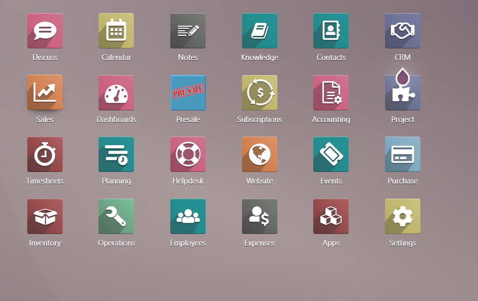
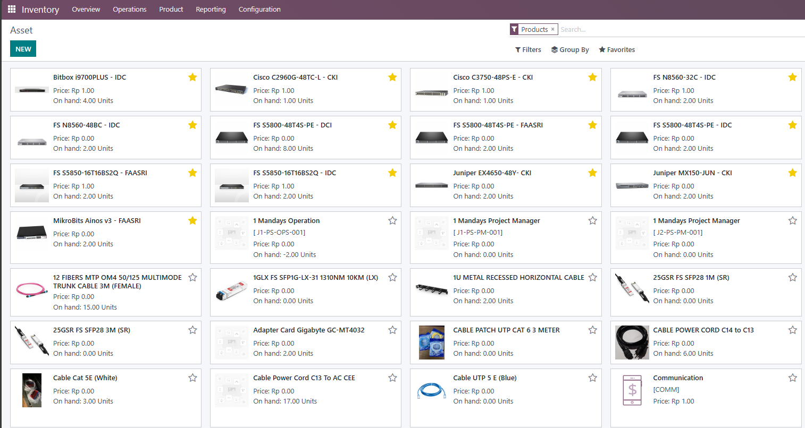

Digitalisasi manajemen aset IT (ITAM) dan koordinasi alur kerja tingkat lanjut menggunakan ekosistem bisnis terpadu.


Proyek ini diluncurkan untuk menyelesaikan masalah klasik di IT Operations: data perangkat keras yang tercerai-berai dan hilangnya jejak histori aset (Asset Lifecycle). Saya mengimplementasikan dan menyesuaikan Modul Inventory & Project Odoo untuk mencapai sentralisasi data.
Menerapkan sistem labeling digital dan pendataan pergerakan server/PC antar cabang secara real-time untuk keperluan audit (Stock Opname).
Modul Project digunakan untuk mendistribusikan tiket tugas perawatan aset IT ke tim teknisi dengan pemantauan tenggat waktu otomatis.
Membuat jembatan data (pipeline) menggunakan skrip Python/VBA untuk mengekstrak data Odoo mentah menjadi laporan finansial dan budgeting C-Level.